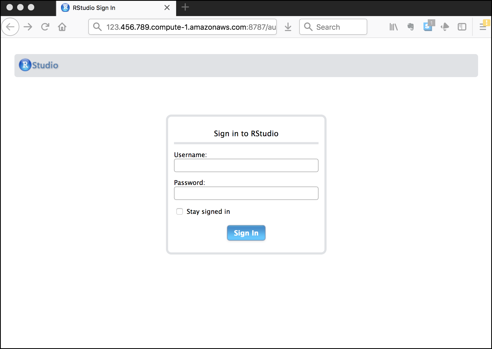
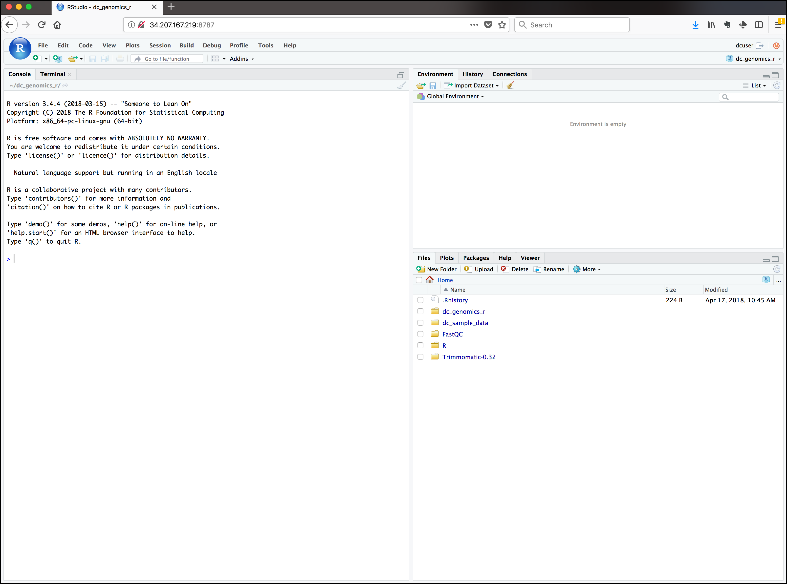

Introducing R and RStudio IDE
Overview
Teaching: 30 min
Exercises: 15 minQuestions
Why use R?
Why use RStudio and how does it differ from R?
Objectives
Know advantages of analyzing data in R
Know advantages of using RStudio
Create an RStudio project, and know the benefits of working within a project
Be able to customize the RStudio layout
Be able to locate and change the current working directory with
getwd()andsetwd()Compose an R script file containing comments and commands
Understand what an R function is
Locate help for an R function using
?,??, andargs()
Getting ready to use R for the first time
In this lesson we will take you through the very first things you need to get R working.
Tip: This lesson works best on the cloud
Remember, these lessons assume we are using the pre-configured virtual machine instances provided to you at a genomics workshop. Much of this work could be done on your laptop, but we use instances to simplify workshop setup requirements, and to get you familiar with using the cloud (a common requirement for working with big data). Visit the Genomics Workshop setup page for details on getting this instance running on your own, or for the info you need to do this on your own computer.
A Brief History of R
R has been around since 1995, and was created by Ross Ihaka and Robert Gentleman at the University of Auckland, New Zealand. R is based off the S programming language developed at Bell Labs and was developed to teach intro statistics. See this slide deck by Ross Ihaka for more info on the subject.
Advantages of using R
At more than 20 years old, R is fairly mature and growing in popularity. However, programming isn’t a popularity contest. Here are key advantages of analyzing data in R:
- R is open source. This means R is free - an advantage if you are at an institution where you have to pay for your own MATLAB or SAS license. Open source, is important to your colleagues in parts of the world where expensive software in inaccessible. It also means that R is actively developed by a community (see r-project.org), and there are regular updates.
- R is widely used. Ok, maybe programming is a popularity contest. Because, R is used in many areas (not just bioinformatics), you are more likely to find help online when you need it. Chances are, almost any error message you run into, someone else has already experienced.
- R is powerful. R runs on multiple platforms (Windows/MacOS/Linux). It can work with much larger datasets than popular spreadsheet programs like Microsoft Excel, and because of its scripting capabilities is far more reproducible. Also, there are thousands of available software packages for science, including genomics and other areas of life science.
Discussion: Your experience
What has motivated you to learn R? Have you had a research question for which spreadsheet programs such as Excel have proven difficult to use, or where the size of the data set created issues?
Introducing RStudio Server
In these lessons, we will be making use of a software called RStudio, an Integrated Development Environment (IDE). RStudio, like most IDEs, provides a graphical interface to R, making it more user-friendly, and providing dozens of useful features. We will introduce additional benefits of using RStudio as you cover the lessons. In this case, we are specifically using RStudio Server, a version of RStudio that can be accessed in your web browser. RStudio Server has the same features of the Desktop version of RStudio you could download as standalone software.
Log on to RStudio Server
Open a web browser and enter the IP address of your instance
(provided by your instructors), followed by
:8787. For example, if your IP address was 123.45.67.89 your URL would be
http://123.45.67.89:8787
Tip: Make sure there are no spaces before or after your URL or
your web browser may interpret it as a search query.
You should now be looking at a page that will allow you to login to the RStudio server:

Enter your user credentials and click Sign In. The credentials for the genomics Data Carpentry instances will be provided by your instructors.
You should now see the RStudio interface:

Create an RStudio project
One of the first benefits we will take advantage of in RStudio is something called an RStudio Project. An RStudio project allows you to more easily:
- Save data, files, variables, packages, etc. related to a specific analysis project
- Restart work where you left off
- Collaborate, especially if you are using version control such as git.
- To create a project, go to the File menu, and click New Project....

-
In the window that opens select New Directory, then New Project. For “Directory name:” enter dc_genomics_r. For “Create project as subdirectory of”, you may leave the default, which is your home directory “~”.
-
Finally click Create Project. In the “Files” tab of your output pane (more about the RStudio layout in a moment), you should see an RStudio project file, dc_genomics_r.Rproj. All RStudio projects end with the “.Rproj” file extension.
Tip: Make your project more reproducible with Packrat
One of the most wonderful and also frustrating aspects of working with R is managing packages. We will talk more about them, but packages (e.g. ggplot2) are add-ons that extend what you can do with R. Unfortunately it is very common that you may run into versions of R and/or R packages that are not compatible. This may make it difficult for someone to run your R script using their version of R or a given R package, and/or make it more difficult to run their scripts on your machine. Packrat is an RStudio add-on that will associate your packages and project so that your work is more portable and reproducible. To turn on Packrat click on the Tools menu and select Project Options. Under Packrat check off “Use packrat with this project” and follow any installation instructions.
Creating your first R script
Now that we are ready to start exploring R, we will want to keep a record of the commands we are using. To do this we can create an R script:
Click the File menu and select New File and then R Script. Before we go any further, save your script by clicking the save/disk icon that is in the bar above the first line in the script editor, or click the File menu and select save. In the “Save File” window that opens, name your file “genomics_r_basics”. The new script genomics_r_basics.R should appear under “files” in the output pane. By convention, R scripts end with the file extension .R.
Overview and customization of the RStudio layout
Here are the major windows (or panes) of the RStudio environment:

- Source: This pane is where you will write/view R scripts. Some outputs
(such as if you view a dataset using
View()) will appear as a tab here. - Console/Terminal: This is actually where you see the execution of commands. This is the same display you would see if you were using R at the command line without RStudio. You can work interactively (i.e. enter R commands here), but for the most part we will run a script (or lines in a script) in the source pane and watch their execution and output here. The “Terminal” tab give you access to the BASH terminal (the Linux operating system, unrelated to R).
- Environment/History: Here, RStudio will show you what datasets and objects (variables) you have created and which are defined in memory. You can also see some properties of objects/datasets such as their type and dimensions. The “History” tab contains a history of the R commands you’ve executed R.
- Files/Plots/Packages/Help: This multipurpose pane will show you the contents of directories on your computer. You can also use the “Files” tab to navigate and set the working directory. The “Plots” tab will show the output of any plots generated. In “Packages” you will see what packages are actively loaded, or you can attach installed packages. “Help” will display help files for R functions and packages.
Tip: Uploads and downloads in the cloud
In the “Files” tab you can select a file and download it from your cloud instance (click the “more” button) to your local computer. Uploads are also possible.
All of the panes in RStudio have configuration options. For example, you can minimize/maximize a pane, or by moving your mouse in the space between panes you can resize as needed. The most important customization options for pane layout are in the View menu. Other options such as font sizes, colors/themes, and more are in the Tools menu under Global Options.
You are working with R
Although we won’t be working with R at the terminal, there are lots of reasons to. For example, once you have written an RScript, you can run it at any Linux or Windows terminal without the need to start up RStudio. We don’t want you to get confused - RStudio runs R, but R is not RStudio. For more on running an R Script at the terminal see this Software Carpentry lesson.
Getting to work with R: navigating directories
Now that we have covered the more aesthetic aspects of RStudio, we can get to work using some commands. We will write, execute, and save the commands we learn in our genomics_r_basics.R script that is loaded in the Source pane. First, lets see what directory we are in. To do so, type the following command into the script:
getwd()
To execute this command, make sure your cursor is on the same line the command is written. Then click the Run button that is just above the first line of your script in the header of the Source pane.
In the console, we expect to see the following output*:
[1] "/home/dcuser/dc_genomics_r"
* Notice, at the Console, you will also see the instruction you executed above the output in blue.
Since we will be learning several commands, we may already want to keep some
short notes in our script to explain the purpose of the command. Entering a #
before any line in an R script turns that line into a comment, which R will
not try to interpret as code. Edit your script to include a comment on the
purpose of commands you are learning, e.g.:
# this command shows the current working directory
getwd()
Exercise: Work interactively in R
What happens when you try to enter the
getwd()command in the Console pane?Solution
You will get the same output you did as when you ran
getwd()from the source. You can run any command in the Console, however, executing it from the source script will make it easier for us to record what we have done, and ultimately run an entire script, instead of entering commands one-by-one.
For the purposes of this exercise we want you to be in the directory "/home/dcuser/R_data".
What if you weren’t? You can set your home directory using the setwd()
command. Enter this command in your script, but don’t run this yet.
# This sets the working directory
setwd()
You may have guessed, you need to tell the setwd() command
what directory you want to set as your working directory. To do so, inside of
the parentheses, open a set of quotes. Inside the quotes enter a / which is
the root directory for Linux. Next, use the Tab key, to take
advantage of RStudio’s Tab-autocompletion method, to select home, dcuser,
and dc_genomics_r directory. The path in your script should look like this:
# This sets the working directory
setwd("/home/dcuser/dc_genomics_r")
When you run this command, the console repeats the command, but gives you no
output. Instead, you see the blank R prompt: >. Congratulations! Although it
seems small, knowing what your working directory is and being able to set your
working directory is the first step to analyzing your data.
Tip: Never use
setwd()Wait, what was the last 2 minutes about? Well, setting your working directory is something you need to do, you need to be very careful about using this as a step in your script. For example, what if your script is being on a computer that has a different directory structure? The top-level path in a Unix file system is root
/, but on Windows it is likelyC:\. This is one of several ways you might cause a script to break because a file path is configured differently than your script anticipates. R packages like here and file.path allow you to specify file paths is a way that is more operating system independent. See Jenny Bryan’s blog post for this and other R tips.
Using functions in R, without needing to master them
A function in R (or any computing language) is a short
program that takes some input and returns some output. Functions may seem like an advanced topic (and they are), but you have already
used at least one function in R. getwd() is a function! The next sections will help you understand what is happening in
any R script.
Exercise: What do these functions do?
Try the following functions by writing them in your script. See if you can guess what they do, and make sure to add comments to your script about your assumed purpose.
dir()sessionInfo()date()Sys.time()Solution
dir()# Lists files in the working directorysessionInfo()# Gives the version of R and additional info including on attached packagesdate()# Gives the current dateSys.time()# Gives the current timeNotice: Commands are case sensitive!
You have hopefully noticed a pattern - an R function has three key properties:
- Functions have a name (e.g.
dir,getwd); note that functions are case sensitive! - Following the name, functions have a pair of
() - Inside the parentheses, a function may take 0 or more arguments
An argument may be a specific input for your function and/or may modify the
function’s behavior. For example the function round() will round a number
with a decimal:
# This will round a number to the nearest integer
round(3.14)
[1] 3
Getting help with function arguments
What if you wanted to round to one significant digit? round() can
do this, but you may first need to read the help to find out how. To see the help
(In R sometimes also called a “vignette”) enter a ? in front of the function
name:
?round()
The “Help” tab will show you information (often, too much information). You
will slowly learn how to read and make sense of help files. Checking the “Usage” or “Examples”
headings is often a good place to look first. If you look under “Arguments,” we
also see what arguments we can pass to this function to modify its behavior.
You can also see a function’s argument using the args() function:
args(round)
function (x, digits = 0)
NULL
round() takes two arguments, x, which is the number to be
rounded, and a
digits argument. The = sign indicates that a default (in this case 0) is
already set. Since x is not set, round() requires we provide it, in contrast
to digits where R will use the default value 0 unless you explicitly provide
a different value. We can explicitly set the digits parameter when we call the
function:
round(3.14159, digits = 2)
[1] 3.14
Or, R accepts what we call “positional arguments”, if you pass a function
arguments separated by commas, R assumes that they are in the order you saw
when we used args(). In the case below that means that x is 3.14159 and
digits is 2.
round(3.14159, 2)
[1] 3.14
Finally, what if you are using ? to get help for a function in a package not installed on your system, such as when you are running a script which has dependencies.
?geom_point()
will return an error:
Error in .helpForCall(topicExpr, parent.frame()) :
no methods for ‘geom_point’ and no documentation for it as a function
Use two question marks (i.e. ??geom_point()) and R will return
results from a search of the documentation for packages you have installed on your computer
in the “Help” tab. Finally, if you think there
should be a function, for example a statistical test, but you aren’t
sure what it is called in R, or what functions may be available, use
the help.search() function.
Exercise: Searching for R functions
Use
help.search()to find R functions for the following statistical functions. Remember to put your search query in quotes inside the function’s parentheses.
- Chi-Squared test
- Student-t test
- mixed linear model
Solution
While your search results may return several tests, we list a few you might find:
- Chi-Squared test:
stats::Chisquare- Student-t test:
stats::TDist- mixed linear model:
stats::lm.glm
We will discuss more on where to look for the libraries and packages that contain functions you want to use. For now, be aware that two important ones are CRAN - the main repository for R, and Bioconductor - a popular repository for bioinformatics-related R packages.
RStudio contextual help
Here is one last bonus we will mention about RStudio. It’s difficult to remember all of the arguments and definitions associated with a given function. When you start typing the name of a function and hit the Tab key, RStudio will display functions and associated help:

Once you type a function, hitting the Tab inside the parentheses will show you the function’s arguments and provide additional help for each of these arguments.

Key Points
R is a powerful, popular open-source scripting language
You can customize the layout of RStudio, and use the project feature to manage the files and packages used in your analysis
RStudio allows you to run R in an easy-to-use interface and makes it easy to find help